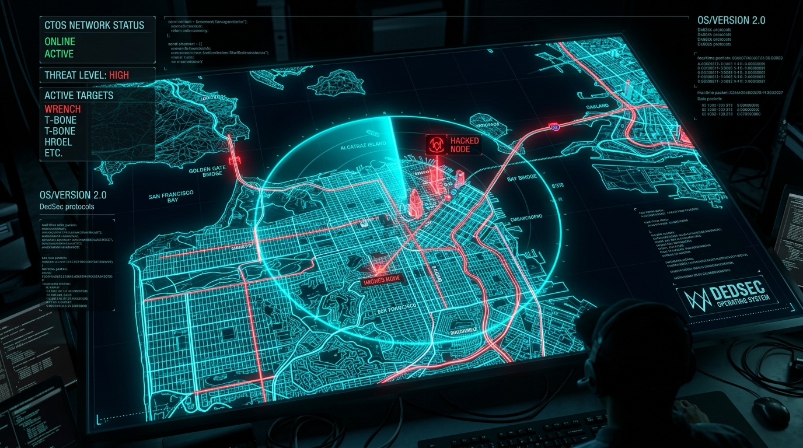

AI/ML Engineer building production-grade Agentic AI systems on AWS, Azure, and GCP. Experienced in Python, Flask, FastAPI, Terraform, Kubernetes, and GitOps, developing secure RESTful APIs that enable seamless access to cloud resources and automate complex infrastructure workflows. Focused on designing scalable, cloud-native platforms that transform intelligent AI solutions into reliable production systems.

Prefer command-line interfaces? Query skills, projects, Multi-Cloud architectures, Terraform IaC, and REST API layers right from the terminal.
Engineering stateful multi-agent workflows, scalable foundation model pipelines, and resilient cloud-native platforms.
I am an AI/ML & Cloud Engineer at Tata Consultancy Services (TCS) with a deep passion for building autonomous agentic AI systems, enterprise RAG engines, and scalable cloud-native architectures.
My expertise spans orchestrating multi-agent state machines with LangGraph, LangChain & Strands Agents, building generative AI pipelines on AWS Bedrock & Azure, deploying containerized microservices on Kubernetes with automated CI/CD, and designing high-performance async Python microservices.
Autonomous multi-agent swarms with LangGraph & Strands Agents.
Resilient Kubernetes, AWS Bedrock, Azure & automated CI/CD.
Building stateful multi-agent workflows with LangGraph, LangChain, and Strands Agents with human-in-the-loop controls and dynamic tool execution.
Orchestrating microservices on Kubernetes, Azure & AWS Bedrock with robust GitOps, automated CI/CD pipelines, Docker containers, and zero-downtime rollouts.
Enterprise Retrieval-Augmented Generation using AWS Bedrock foundation models, Chroma/Qdrant vector stores, and hybrid semantic rerankers.
High-throughput asynchronous backends with FastAPI, AsyncIO, Celery, Redis caching, and resilient PostgreSQL microservice architectures.
Experience live stateful multi-agent execution, Multi-Cloud Terraform provisioning across AWS, Azure & GCP, and secure Python/Flask REST API gateways.
Core expertise across Agentic AI, Enterprise Cloud, Distributed Python Backends, and I
Professional experience at TCS, enterprise Agentic AI deployments, and continuous cloud innovation.
Designing and deploying enterprise-scale Agentic AI workflows using LangGraph, LangChain & Strands Agents. Implementing generative AI pipelines and RAG architectures on AWS Bedrock & Azure. Managing containerized microservice deployments on Kubernetes (K8s) with automated CI/CD pipelines and robust Python async backends.
Architected autonomous state machine agents with LangGraph, dense vector retrieval pipelines with ChromaDB and Qdrant, and streaming API endpoints with FastAPI.
Built asynchronous API gateways with Redis token-bucket rate limiters, Docker containerization, PostgreSQL schemas, and automated CI/CD deployment pipelines.
Have a project, Agentic AI challenge, or cloud architecture inquiry? Let's connect.
Feel free to reach out via email or connect with me on GitHub. I'm actively open for innovative Agentic AI architectures, cloud migrations, and technical collaborations.

